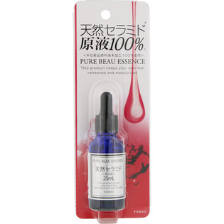

返回列表
产品名称：ピュアビューエッセンス（ＣＥ）

ジャパンギャルズ ピュアビューエッセンス（ＣＥ） ２５ＭＬ
メーカー ジャパンギャルズ
JANコード 4513915007270
商品の特徴
○＊天然セラミド ○原液100％※ ○＜※化粧品材料液未加工100％使用＞ ＊保湿成分
成分・分量
水、BG、セレブロシド、フェノキシエタノール、メチルイソチアゾリノン
用法及び用量
＜使用方法＞ スポイトで適量を指先またはコットンにとり、目元・口元・お顔全体など気になる部分に馴染ませるように塗布します。